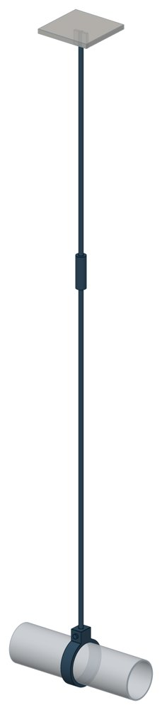

Опоры жесткие подвесные Т23
Серия 4.903-10 вып. 6. Dн 89–325 мм, вертикальная нагрузка — до 34,32 кН, масса 2,08–22,97 кг.

- Диаметр трубы Dн
- 89–325 мм
- Документ
- Серия 4.903-10 вып. 6
- Исполнений
- 56
- Вертикальная нагрузка
- до 3500 кгс
- Масса
- 2,08–22,97 кг
- 3D-модели
- у всех исполнений (условные: общий вид по габаритам)
Таблица исполнений Т23
| Обозначение | Код ПРОМБУРГ | Dнмм | Вертикальная нагрузкакгс | minмм | maxмм | Диаметр тяги dмм | Массакг | 3D |
|---|---|---|---|---|---|---|---|---|
| Т23.01 | ПБ-Т23-0089-1 | 89 | 300 | 1150 | 1230 | 10 | 2,08 | 3D |
| Т23.02 | ПБ-Т23-0089-2 | 89 | 300 | 1380 | 1480 | 10 | 2,23 | 3D |
| Т23.03 | ПБ-Т23-0089-3 | 89 | 300 | 1630 | 1730 | 10 | 2,39 | 3D |
| Т23.04 | ПБ-Т23-0089-4 | 89 | 300 | 1880 | 1980 | 10 | 2,54 | 3D |
| Т23.05 | ПБ-Т23-0089-5 | 89 | 300 | 2130 | 2230 | 10 | 2,7 | 3D |
| Т23.06 | ПБ-Т23-0089-6 | 89 | 300 | 2380 | 2480 | 10 | 2,85 | 3D |
| Т23.07 | ПБ-Т23-0089-7 | 89 | 300 | 2630 | 2730 | 10 | 3 | 3D |
| Т23.08 | ПБ-Т23-0108-1 | 108 | 500 | 1160 | 1260 | 12 | 2,7 | 3D |
| Т23.09 | ПБ-Т23-0108-2 | 108 | 500 | 1410 | 1510 | 12 | 2,93 | 3D |
| Т23.10 | ПБ-Т23-0108-3 | 108 | 500 | 1660 | 1760 | 12 | 3,15 | 3D |
| Т23.11 | ПБ-Т23-0108-4 | 108 | 500 | 1910 | 2010 | 2 | 3,37 | 3D |
| Т23.12 | ПБ-Т23-0108-5 | 108 | 500 | 2160 | 2260 | 12 | 3,59 | 3D |
| Т23.13 | ПБ-Т23-0108-6 | 108 | 500 | 2410 | 2510 | 2 | 3,81 | 3D |
| Т23.14 | ПБ-Т23-0108-7 | 108 | 500 | 2660 | 2760 | 12 | 4,03 | 3D |
| Т23.15 | ПБ-Т23-0133-1 | 133 | 800 | 1150 | 1300 | 16 | 5,36 | 3D |
| Т23.16 | ПБ-Т23-0133-2 | 133 | 800 | 1400 | 1550 | 16 | 5,75 | 3D |
| Т23.17 | ПБ-Т23-0133-3 | 133 | 800 | 1650 | 1800 | 16 | 6,14 | 3D |
| Т23.18 | ПБ-Т23-0133-4 | 133 | 800 | 1900 | 2050 | 16 | 6,55 | 3D |
| Т23.19 | ПБ-Т23-0133-5 | 133 | 800 | 2150 | 2300 | 16 | 6,94 | 3D |
| Т23.20 | ПБ-Т23-0133-6 | 133 | 800 | 2400 | 2550 | 16 | 7,33 | 3D |
| Т23.21 | ПБ-Т23-0133-7 | 133 | 800 | 2650 | 2800 | 16 | 7,72 | 3D |
| Т23.22 | ПБ-Т23-0159-1 | 159 | 1200 | 1160 | 1310 | 16 | 5,54 | 3D |
| Т23.23 | ПБ-Т23-0159-2 | 159 | 1200 | 1410 | 1560 | 16 | 5,93 | 3D |
| Т23.24 | ПБ-Т23-0159-3 | 159 | 1200 | 1660 | 1810 | 16 | 6,32 | 3D |
| Т23.25 | ПБ-Т23-0159-4 | 159 | 1200 | 1910 | 2060 | 16 | 6,73 | 3D |
| Т23.26 | ПБ-Т23-0159-5 | 159 | 1200 | 2160 | 2310 | 16 | 7,12 | 3D |
| Т23.27 | ПБ-Т23-0159-6 | 159 | 1200 | 2410 | 2560 | 16 | 7,51 | 3D |
| Т23.28 | ПБ-Т23-0159-7 | 159 | 1200 | 2660 | 2810 | 16 | 7,9 | 3D |
| Т23.29 | ПБ-Т23-0194-1 | 194 | 1500 | 1180 | 1330 | 16 | 5,78 | 3D |
| Т23.30 | ПБ-Т23-0194-2 | 194 | 1500 | 1420 | 1580 | 16 | 6,17 | 3D |
| Т23.31 | ПБ-Т23-0194-3 | 194 | 1500 | 1680 | 1830 | 16 | 6,56 | 3D |
| Т23.32 | ПБ-Т23-0194-4 | 194 | 1500 | 1930 | 2080 | 16 | 6,97 | 3D |
| Т23.33 | ПБ-Т23-0194-5 | 194 | 1500 | 2180 | 2330 | 16 | 7,36 | 3D |
| Т23.34 | ПБ-Т23-0194-6 | 194 | 1500 | 2430 | 2580 | 16 | 7,75 | 3D |
| Т23.35 | ПБ-Т23-0194-7 | 194 | 1500 | 2680 | 2830 | 16 | 8,14 | 3D |
| Т23.36 | ПБ-Т23-0219-1 | 219 | 2000 | 1190 | 1340 | 20 | 8,96 | 3D |
| Т23.37 | ПБ-Т23-0219-2 | 219 | 2000 | 1440 | 1590 | 20 | 9,58 | 3D |
| Т23.38 | ПБ-Т23-0219-3 | 219 | 2000 | 1690 | 1840 | 20 | 10,2 | 3D |
| Т23.39 | ПБ-Т23-0219-4 | 219 | 2000 | 1990 | 2090 | 20 | 10,82 | 3D |
| Т23.40 | ПБ-Т23-0219-5 | 219 | 2000 | 2190 | 2310 | 20 | 11,43 | 3D |
| Т23.41 | ПБ-Т23-0219-6 | 219 | 2000 | 2440 | 2590 | 20 | 12,05 | 3D |
| Т23.42 | ПБ-Т23-0219-7 | 219 | 2000 | 2690 | 2840 | 20 | 12,67 | 3D |
| Т23.43 | ПБ-Т23-0273-1 | 273 | 2600 | 1240 | 1390 | 20 | 10,64 | 3D |
| Т23.44 | ПБ-Т23-0273-2 | 273 | 2600 | 1490 | 1640 | 20 | 11,26 | 3D |
| Т23.45 | ПБ-Т23-0273-3 | 273 | 2600 | 1740 | 1890 | 20 | 11,88 | 3D |
| Т23.46 | ПБ-Т23-0273-4 | 273 | 2600 | 1990 | 2140 | 20 | 12,5 | 3D |
| Т23.47 | ПБ-Т23-0273-5 | 273 | 2600 | 2240 | 2390 | 20 | 13,11 | 3D |
| Т23.48 | ПБ-Т23-0273-6 | 273 | 2600 | 2490 | 2640 | 20 | 13,73 | 3D |
| Т23.49 | ПБ-Т23-0273-7 | 273 | 2600 | 2740 | 2890 | 20 | 14,35 | 3D |
| Т23.50 | ПБ-Т23-0325-1 | 325 | 3500 | 1290 | 1460 | 24 | 17 | 3D |
| Т23.51 | ПБ-Т23-0325-2 | 325 | 3500 | 1540 | 1710 | 24 | 17,89 | 3D |
| Т23.52 | ПБ-Т23-0325-3 | 325 | 3500 | 1790 | 1960 | 24 | 18,78 | 3D |
| Т23.53 | ПБ-Т23-0325-4 | 325 | 3500 | 2040 | 2210 | 24 | 19,66 | 3D |
| Т23.54 | ПБ-Т23-0325-5 | 325 | 3500 | 2290 | 2460 | 24 | 20,55 | 3D |
| Т23.55 | ПБ-Т23-0325-6 | 325 | 3500 | 2540 | 2710 | 24 | 21,44 | 3D |
| Т23.56 | ПБ-Т23-0325-7 | 325 | 3500 | 2790 | 2960 | 24 | 22,97 | 3D |
Чтобы заказать, сообщите обозначение и код ПРОМБУРГ: +7 (499) 325-51-35, promburg@yandex.ru.
Нормативные документы
- Серия 4.903-10 вып. 6 Изделия и детали трубопроводов для тепловых сетей. Выпуск 6. Опоры трубопроводов подвесные (жесткие и пружинные) — документ, по которому изготавливается изделие — Не действует с 01.01.1997. Заменён: Серия 5.903-13 вып. 6-95. Изделие изготавливается по прежнему обозначению.
Связанные позиции
- Соседний тип: Т22 — Опоры жесткие подвесные
- Соседний тип: Т24 — Опоры жесткие подвесные
На трубу Dн 89–325 мм в каталоге
Позиции каталога с исполнениями на те же наружные диаметры трубы.
Детали трубопровода
- Заглушка стальная эллиптическая общих Dн: 7
- Отвод стальной крутоизогнутый 90°, 09Г2С общих Dн: 7
- Отвод стальной крутоизогнутый 90° общих Dн: 7
- Переход стальной концентрический общих Dн: 7
- Фланец стальной воротниковый общих Dн: 7
- Фланец стальной плоский приварной общих Dн: 7
- Отвод нержавеющий 90° общих Dн: 1
Компенсаторы
- Компенсатор сильфонный 2ОПКР общих Dн: 7
- Компенсатор сильфонный 2ОПКР (ИЯНШ) 2ОПКРИ общих Dн: 7
- Компенсатор сильфонный 2СКУ.М 2СКУМ общих Dн: 7
- Компенсатор сильфонный 2СКУ.М (ИЯНШ) 2СКУМИ общих Dн: 7
- Компенсатор сильфонный 2СКУ.ППМ 2СКУППМ общих Dн: 7
- Компенсатор сильфонный 2СКУ.ППМ (ИЯНШ) 2СКУППМИ общих Dн: 7
- Компенсатор сильфонный 2СКУ.ППУ 2СКУППУ общих Dн: 7
- Компенсатор сильфонный 2СКУ.ППУ (ИЯНШ) 2СКУППУИ общих Dн: 7
- Компенсатор сильфонный 2СКУ.ППУ/ОЦ (ИЯНШ) 2СКУППУОЦИ общих Dн: 7
- Компенсатор сильфонный фланцевый KSOF общих Dн: 7
- Компенсатор сильфонный КС общих Dн: 7
- Компенсатор сильфонный КСО общих Dн: 7
- Компенсатор сильфонный КСО (ИЯНШ) КСОИ общих Dн: 7
- Компенсатор сильфонный КСОФ общих Dн: 7
И ещё 20 типов — в оглавлении каталога.
Другие опоры и подвески
- Опорные плиты диэлектрические ТС-632 общих Dн: 8
- Опоры бескорпусные неподвижные ОБН общих Dн: 8
- Опоры приварные неподвижные скользящие ОПН общих Dн: 8
- Опоры скользящие и неподвижные ОХН общих Dн: 8
- Подвески ПГ и ПМ для горизонтальных трубопроводов ПГ, ПМ общих Dн: 8
- Опоры подвесного типа ПГВ, ПМВ общих Dн: 8
- Блок хомутовый ОСТ 24-125-113-01 общих Dн: 8
- Полухомуты для хомутовых блоков подвесок горизонтальных трубопроводов из хромо молибден о ванадиевых сталей ОСТ 24-125-114-01 общих Dн: 8
- Полухомут для хомутовых опор ОСТ 24-125-120-01 общих Dн: 8
- Хомутовые блоки для подвесок ОСТ 108.275.56-80 общих Dн: 8
И ещё 83 типа — в оглавлении каталога.
Другие типы раздела
Подвески жёсткие (Т22…Т25, ГОСТ 16127)
- Подвесные опоры ПГ2у, ПМ2у
- Подвесные опоры, подвески ПМ2ш, ПГ2ш ПГ2ш, ПМ2ш
- Подвески ПГ и ПМ для горизонтальных трубопроводов ПГ, ПМ
- Опоры подвесного типа ПГВ, ПМВ
- Опоры жесткие подвесные Т22
- Опоры жесткие подвесные Т24
- Опоры жесткие подвесные Т25
Частые вопросы
По какому диаметру подбирать — Dн или Ду?
По наружному диаметру трубы Dн: именно он стоит в таблицах серии. Ду — условный проход, округлённая величина: Ду 100 соответствует Dн 108. В заявке указывайте Dн и толщину стенки трубы.
В старом проекте нагрузка в тс, а здесь в кН. Как сравнить?
Серия 4.903-10 даёт нагрузки в тонна-силах, серия 5.903-13 — в килоньютонах. 1 тс = 9,81 кН, то есть 10 тс — это около 98 кН. В таблицах каталога переключатель единиц пересчитывает значения.
Из какой стали изготавливаются опоры?
По рабочим чертежам серии листовые детали — Ст3сп5 ГОСТ 14637-89, хомуты из круга — сталь 20 ГОСТ 1050-88. Для районов с низкой расчётной температурой воздуха применяется низколегированная сталь, в том числе 09Г2С; размеры опор при этом не меняются. В заявке укажите расчётную температуру наружного воздуха.
Почему часть поверхностей опоры не окрашена?
Поверхности под приварку к трубе и к несущей конструкции оставляют без краски, иначе шов получится некачественным. Их консервируют смазкой, которую снимают перед сваркой.
Что указать в заявке, чтобы получить цену без уточнений?
Обозначение с номером исполнения или код ПБ, количество, Dн и стенку трубы, расчётную температуру наружного воздуха, покрытие, город доставки и желаемый срок. Кнопка «В заявку» в таблице собирает спецификацию, которую можно выгрузить в Excel или отправить письмом.